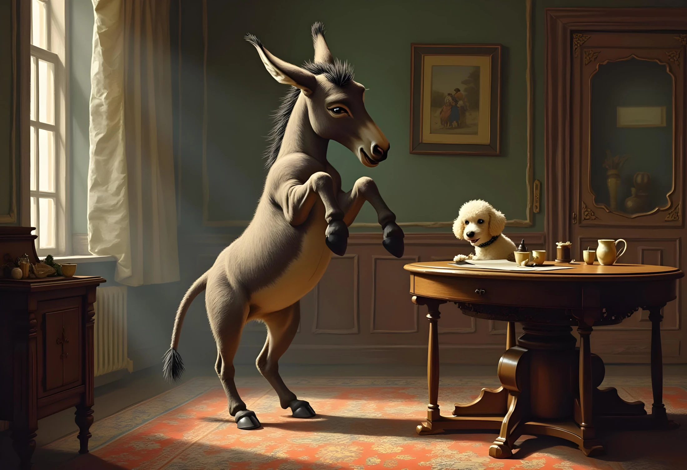

A farmer had a donkey, and a poodle, a very great beauty. The donkey lived in a stable and had plenty of oats and hay to eat, just as any other donkey would. The poodle lived in the house, knew many cute tricks, and was a great favorite with the farmer. The farmer often held him and seldom went out to dine without bringing him home some food to eat. After his dinner, the poodle always jumped onto the farmer’s lap, and the farmer would pet the dog till they both fell asleep in the farmer’s big comfortable chair.
The donkey, on the contrary, had much work to do. He had to carry wood from the forest or carry heavy loads from the farm. He often disliked his own hard life and compared it to the easy life of the poodle.
At last, one day the donkey broke out of the stable, and ran into the farmer's house. He stood up on his back legs and began dancing, shaking his head, and spinning around, like he had seen the dog do. He next tried to jump and bounce all around the farmer, but he broke the table and smashed all the dishes to pieces. He then attempted to lick the farmer in the face.
The farmer was so shocked that he stumbled and fell back into his chair. Seeing this, the donkey leapt onto the farmer’s lap and they all fell down with a crash—chair, donkey, and man.
The field workers, after hearing the strange commotion and realizing the danger to the farmer, came to his rescue, and drove out the donkey to his stable with kicks and clubs. The donkey, as he returned to the stable beaten nearly to death, regretted his foolishness, saying: "I have brought it all on myself! Why could I not have been content to do my work, and not wish to be lazy all day long like that useless little poodle!"
--------------------------------
The Scorpion and the Frog
A scorpion asked a frog to carry him across the river. “But you will sting me,” said the frog. “Never. I promise,” said the scorpion. As the frog swam across the river with the scorpion on his back, the scorpion stung the frog. The frog yelled, “Why did you do that? Now we will both drown!” The scorpion replied, “I'm a scorpion. It's what I do.” (or “it's my nature”)